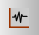

Lab 05: Transistor Design of a Simple CSA Amplifier
Schematic
In the Library Manager window, create a new schematic:
| Library | Cell | View |
|---|---|---|
| MAPS_academy_lab | step4_CSA | schematic |
Open the newly created schematic and reproduce the design shown below:
{kind=link}
The transistors can be found in the sky130_fd_pr_main library. Their names are nfet_01v8 and pfet_01v8. You will also need pins, as listed in the table below:
| Pin Name | Direction |
|---|---|
| in | Input |
| Vl | Input |
| Vm | Input |
| Vh | Input |
| out | Output |
| vdda | InputOutput |
| vssa | InputOutput |
The transistor dimensions are specified in the table below:
| Name | Length | Finger Width | Fingers |
|---|---|---|---|
| NM1 | 1.8u | 2.4u | 1 |
| NM2 | 1.8u | 4u | 1 |
| PM1 | 0.15u | 5u | 4 |
| PM2 | 4u | 1u | 1 |
Place a net5 label on the node connecting PM1 to NM1 and NM2.
When your schematic is ready, check for errors/warnings using the Check and Save button, and create the symbol for your CSA:
While creating the symbol, place the reference voltages (Vl, Vm, Vh) in the Bottom Pins section.
The symbol design is flexible; you can design it similarly to the following figure:
{kind=link}
Test Bench
Add a testbench for the CSA. In the Library Manager window, create a new schematic:
| Library | Cell | View |
|---|---|---|
| MAPS_academy_lab | tb_step4_CSA | schematic |
Open the newly created schematic and reproduce the following design:
{kind=link}
To do this, place:
- Two vdc sources (from analogLib),
- An output pin,
- A bias_block (from the MAPS_academy_helper library).
Set the DC voltage of the vdc source connected to vdda to 1.8.
Set the AC magnitude of the vdc source connected to the CSA input to 1. Leave the DC voltage blank for now.
Next, we will determine the biasing conditions for this amplifier and calculate its gain.
Before proceeding, perform a Check and Save to ensure your schematic is correct.
Create Maestro View
Create the maestro view to launch the simulations:
Click OK in the pre-filled Create New ADE Explorer view window. This opens the familiar Virtuoso ADE Explorer window.
DC Analysis
First, perform a DC analysis to find the optimal operating point of the amplifier (same steps as performed with the ideal operational amplifier in Lab 02: Simulation).
In the Setup pane on the left side, add a DC analysis by clicking the grayed-out field Add Analysis.
- In the pop-up window, select the
dcanalysis, and in the Sweep Variable section, click Component Parameter. -
The pop-up will rearrange itself. Click the Select Component button and select the DC source connected to the CSA input.
- Another pop-up will appear with all selectable parameters for this component.
- From this window, select the first option:
dc vdc "DC voltage". - Click OK and return to the Choosing Analyses window.
-
In the Sweep Range section, set Start to
0and Stop to1.8. - Set the Sweep Type to
Linearwith a Step Size of1m(you can return to this point and reduce the Step Size later).
Add the out node/port to the plotted outputs:
With the above settings, run the simulation.
Simulation
You can observe that the CSA output switches around 1.0 V, but we want to determine the exact value.
In ADE Explorer, navigate to the menu:
In the Outputs Setup list, set the Name of the expression to derivative and in the Details field, enter: deriv(VS("/out")). This provides the derivative of the output signal.
Add a second expression with the Name: op_point and Details: xmin(derivative). This expression provides the argument of the minimum derivative value, corresponding to the voltage point where the amplifier gain is highest.
Click the Plot Outputs icon op_point expression value in the list. You should obtain a result similar to the following figure:
{kind=link}
{kind=link}
In the ADE Explorer window, add a second Analysis: ac analysis, with a Sweep Range from 1 to 1G. Once completed, re-run the simulation to observe the frequency response of the open-loop CSA amplifier.